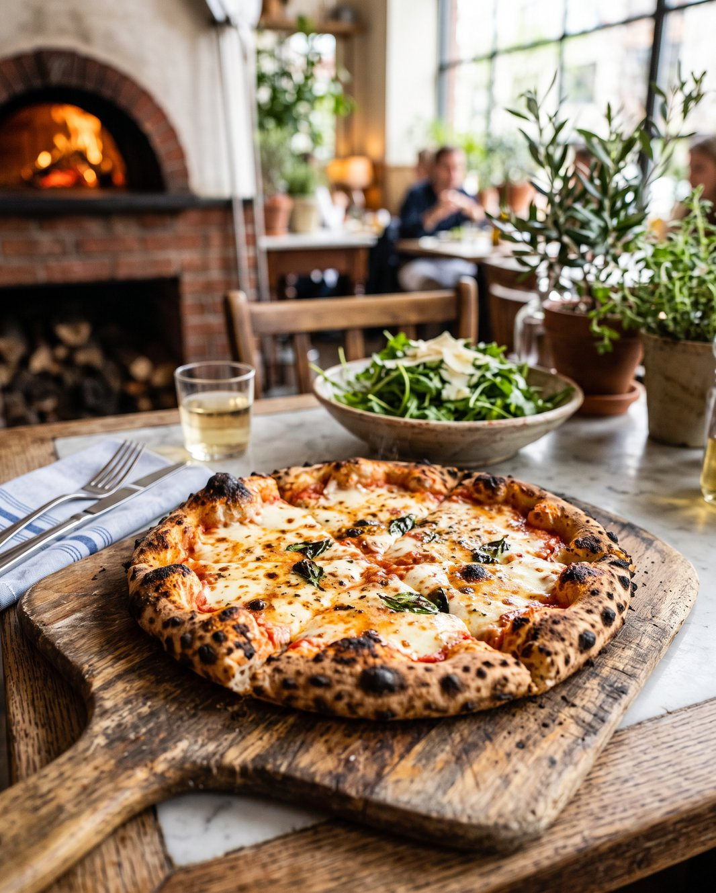
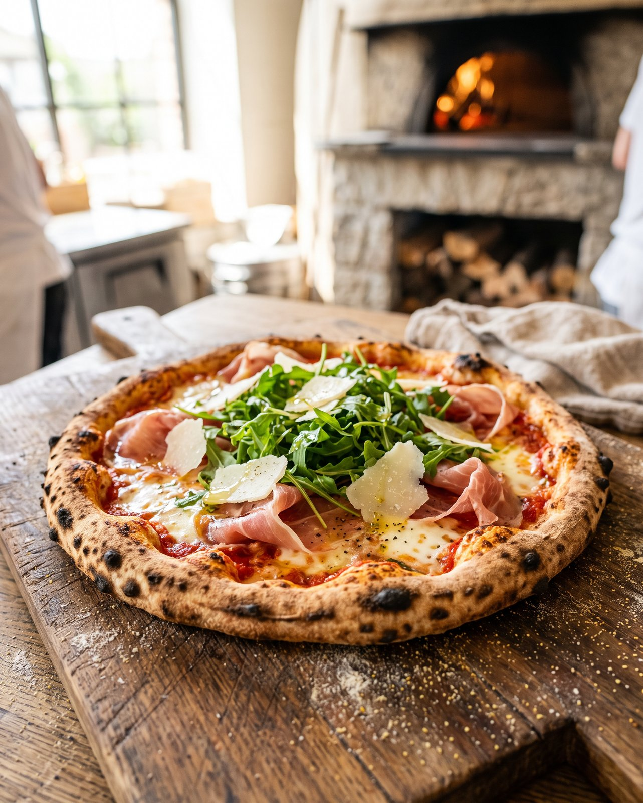
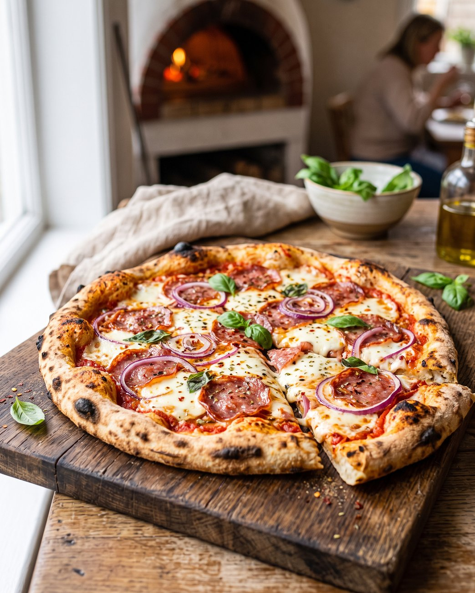

Pizza — Bistro Pełne Radości
Pizza — prosto z pieca, dokładnie wtedy, kiedy masz na nią ochotę.
Na miejscu i na wynos. Ciasto przygotowywane u nas, świeże składniki i piec, który robi swoje.
Z pieca
Świeżo i na miejscu.
Pizzę wypiekamy na bieżąco, na cieście przygotowywanym w naszej kuchni i ze składników, które sami wybieramy. Zjesz ją w zielonym wnętrzu Bistro albo zabierzesz ze sobą — prosto z pieca, w najlepszym momencie.





Burgery
Burgery — konkretnie i świeżo.
Smażone na bieżąco, na miejscu i na wynos — tak jak pizza.
Jak zamówić
Trzy proste kroki.
Zadzwoń
Wybierz pizzę i zadzwoń: 723 800 801. Podpowiemy, co dziś polecamy.
Ustal odbiór
Umówimy godzinę — tak, żeby pizza wyszła z pieca dokładnie na Twój przyjazd.
Odbierz albo zostań
Zabierz pizzę ze sobą albo usiądź u nas i zjedz ją na miejscu, póki jest najlepsza.
Pizza i burgery dostępne na miejscu i na wynos — w Bistro Pełne Radości, Jasionka 954c, od poniedziałku do piątku w godzinach 8:00–17:00.